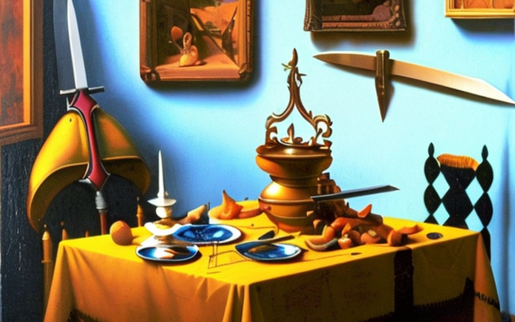
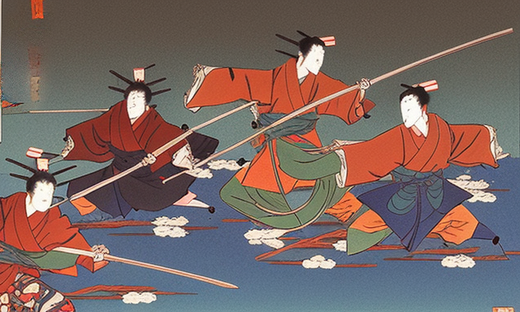
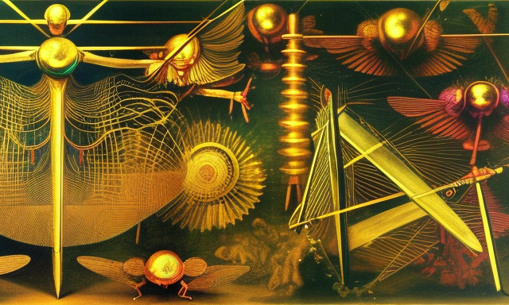
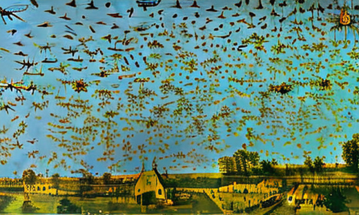

Samurai’s sword and the mosquitoes
HOME
Table of Contents
The wisdom of Confucius

In ancient times, in the land of the rising sun, there lived a group of skilled warriors known as the samurais. These brave men were trained in the art of the sword and were known for their sharp blades and sharp minds.
However, as times changed and the agricultural land became bountiful, the samurai found themselves with an abundance of food. The land prospered and the sources of food became infinite, the samurais found themselves with full bellies and idle hands. They began to mishandle their swords, neglecting their training and becoming careless in their actions.They no longer had to fight for survival, and their swords became dull from lack of use.
They were known for their sharp swords and their fierce fighting abilities. As the samurai grew complacent, their swordsmanship began to deteriorate. They would mishandle their swords during training, and in battle, their strikes would be slow and clumsy. The once-feared samurai were now a laughingstock, mocked by their enemies for their incompetence.
Confucius, the wise philosopher, observed this phenomenon and saw that it was a result of the samurai’s overindulgence in food. He said, “An abundance of food leads to an abundance of laziness. The sword, like the body, must be kept sharp through constant use and discipline.”
“It is a tool, but it is also a responsibility. To handle it with care is to respect the lives it can take. Do not let abundance dull your sword or your mind.”
The evolution of the samurai

The samurai were humbled by Confucius’ words and realized the truth in them. They began to limit their food intake and to train harder than ever before. They regained their sharpness, their swordsmanship returned to its former glory and soon their blades were sharp once more. They remembered the importance of balance, and the dangers of excess.
But as the years passed, the samurais faced new challenges. They began to question the very nature of their existence and the role they played in the world. They struggled to find meaning in a society where food was abundant and violence was unnecessary.
As the samurai continued to hone their skills, they became more and more adept at handling their swords. They were able to cut through the thickest armor and the strongest of materials with ease. But their true test came when a group of mosquitoes, attracted by the smell of food, descended upon their camp.
The perfection of body and mind

The mosquitoes were quick and elusive, darting around in the air, making them difficult to hit. But the samurai were not easily defeated. They moved with lightning speed, their swords flashing through the air, slicing through the mosquitoes’ bodies with precision and ease.
Confucius observed this remarkable display and was filled with admiration. He said, “The samurai’s swords are like the wings of the mosquito, swift and deadly. But the sword is only as sharp as the mind that wields it. A full belly may slow the body, but a sharp mind will always find a way to strike true.”
The samurai took these words to heart and continued to discipline themselves, both in their swordsmanship and in their eating habits. They understood that their bodies and minds were intimately connected, and that they needed to keep both in top condition in order to be truly effective warriors.
As they continued to train, the samurai became even more skilled at handling their swords. They could cut through the smallest of targets, such as a mosquito’s wings, while the insect was still in flight. They became known as the most feared and respected warriors in all of Japan, their swords an extension of their own bodies and minds.
And Confucius said, “The sword is not just a weapon, it is an extension of the self. When the self is honed to perfection, so too will the sword be.”
The arrival of the swarm

One summer, a great swarm of mosquitoes descended upon the land, causing chaos and destruction wherever they went. The villagers were plagued by the tiny pests, and their crops were destroyed. But the samurai, with their sharp swords and disciplined minds, were determined to protect their people.
As the mosquitoes closed in, the samurai prepared for battle. Their swords gleamed in the sunlight as they stood ready to defend their village. The mosquitoes were everywhere, their wings flapping wildly as they buzzed around the samurai. But the samurai were not afraid, for they knew that their swords were their greatest weapon.
With lightning speed and deadly accuracy, the samurai swung their swords, slicing through the mosquitoes with ease. The mosquitoes fell to the ground, their wings severed and their bodies lifeless. The villagers watched in awe as the samurai fought with precision and grace, their swords cutting through the air like a dance.
Confucius observed the battle and saw that the samurai’s swordsmanship had reached new heights. He said, “The mosquitoes may be many, but the sword is mightier. The samurai’s swords are like the wind, blowing through the swarm and leaving destruction in their wake.”
The villagers were grateful to the samurai for protecting them from the mosquitoes, and they praised their skill and bravery. The samurai returned to their village victorious, their swords still sharp and their minds still disciplined.
And Confucius said, “The sword is not just a weapon, it is a symbol of the samurai’s strength and honor. When the sword is wielded with skill and discipline, it can protect and defend the people from a large scale attack of mosquitoes.”
Harmony with nature
As the years passed, the villagers began to experiment with new ways to protect themselves from the mosquitoes. They tried using chemicals and pesticides, but these methods proved to be ineffective and harmful to the environment.
The samurai, however, refused to abandon their swords as a means of protection. They believed that their swords were a natural and pure way to defend against the mosquitoes, and that the use of chemicals was a betrayal of their code of honor.
Confucius saw the wisdom in the samurai’s beliefs and agreed that the natural way was the best way. He said, “The sword is a gift from nature, and it is our duty to use it in harmony with nature. The use of chemicals is an affront to the natural order and will only lead to destruction and imbalance.”
The villagers came to see the truth in Confucius’ words and began to abandon the use of chemicals in favor of the samurai’s swords. They realized that the swords were not only effective in protecting them from the mosquitoes, but they were also better for the environment.
And the samurai, with their sharp swords and disciplined minds, continued to protect the village, always mindful of the delicate balance between man and nature.
Confucius said, “The sword is not just a weapon, it is a reminder of the connection between man and nature. When we use it in harmony with nature, we can find true balance and harmony.”